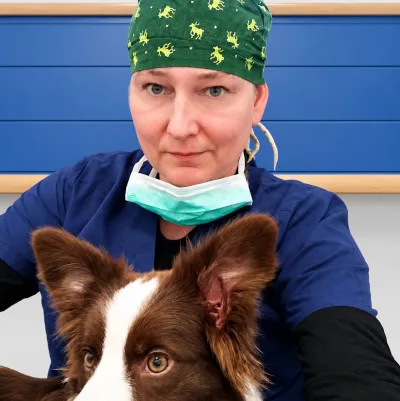
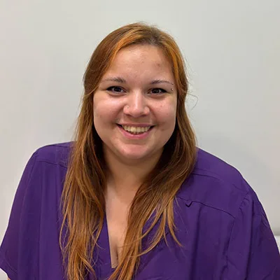
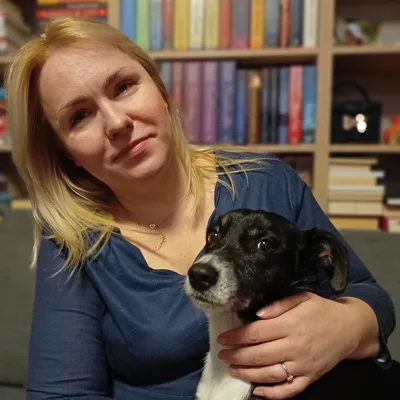
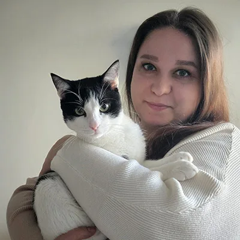
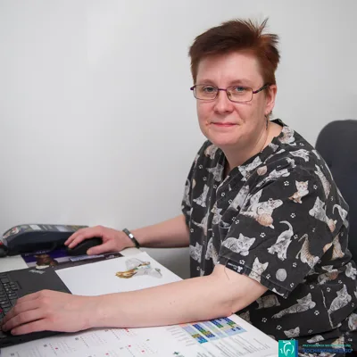
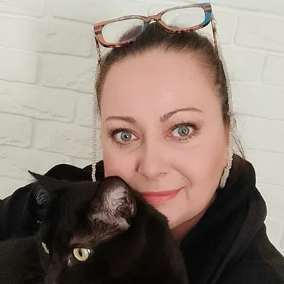
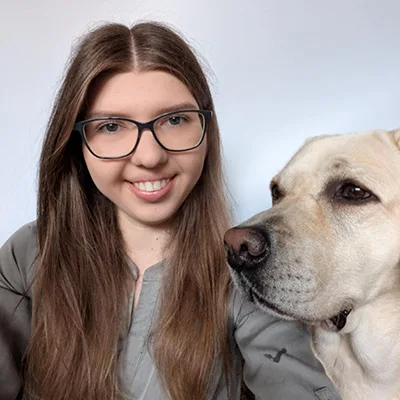

Specjalista Chorób Psów i Kotów Kierownik Przychodni przy Kochanowskiego
Absolwentka Wydziału Medycyny Weterynaryjnej SGGW z 2009 roku. W 2023 roku ukończyła studia specjalizacyjne i uzyskała tytuł Specjalisty Chorób Psów i Kotów. Po studiach pracowała w przychodniach weterynaryjnych. Przez kilka lat byłą związana z biznesem farmaceutycznym oraz laboratorium Alab Weterynaria. Od 2017 roku pełni w Przychodni obowiązki kierownika. Przyjmuje pacjentów internistycznych. Członek sekcji onkologii PSLWMZ.
Prywatnie uwielbia podróżować, spędzać czas z rodziną. Interesuje się uprawą roślin domowych oraz ogrodowych.
Specjalista Chorób Psów i Kotów Kierownik Przychodni na Kondratowicza
Absolwent Wydziału Medycyny Weterynaryjnej Szkoły Głównej Gospodarstwa Wiejskiego w 2008 roku. Od czasu uzyskania prawa wykonywania zawodu praktykował na terenie Warszawy – od małych gabinetów weterynaryjnych po duże całodobowe kliniki. Od 2013 roku praca zawodowa skoncentrowana niemal wyłącznie na pacjentach onkologicznych. Od 2017 roku współwłaściciel Przychodni Weterynaryjnej Kochanowskiego. W 2018 roku uzyskał tytuł specjalisty chorób psów i kotów. Członek Sekcji Onkologii Polskiego Stowarzyszenia Lekarzy Weterynarii, wykładowca na studiach specjalizacyjnych „Weterynaryjnej Diagnostyki Laboratoryjnej” oraz na krajowych seminariach i konferencjach, autor publikacji w krajowych czasopismach branżowych. Jest pomysłodawcą i organizatorem corocznego seminarium weterynaryjnego Mikołajki Onkologiczne.
Mąż, tata dwójki dzieci, opiekun kotki Mroci. Jego hobby to drewno.
Absolwentka wydziału Medycyny Weterynaryjnej SGGW. Od studiów związana z praktyką kliniczną. Aktualnie w trakcie studiów specjalizacyjnych z chirurgii weterynaryjnej na Uniwersytecie Przyrodniczym we Wrocławiu.
Zajmuje się chirurgią miękką, ze szczególnym uwzględnieniem chirurgii onkologicznej oraz rozwija swoje zainteresowania w kierunku ortopedii. Konsultuje i prowadzi pacjentów ortopedycznych. Ukończyła między innymi kursy ESAVS z chirurgii tkanek miękkich i pierwszy stopień ortopedii oraz szkolenie AO VET Principles of Small Animal Fracture Management.
Prywatnie opiekunka kota Ike – specjalisty od drzemek i testera domowego spokoju.
Ukończyła Wydział Medycyny Weterynaryjnej SGGW w 2019 roku. Doświadczenie zdobywała w klinikach całodobowych opiekując się pacjentami wymagającymi intensywnej terapii. Teraz swoją uwagę skupia na pacjentach z problemami dermatologicznymi i stale poszerza swoją wiedzę w tej dziedzinie.
W czasie wolnym trenuje z kettlebells i słucha australijskiego rocka psychodelicznego. Opiekunka dwóch adoptowanych psów.
W 2012 roku ukończyła Wydział Medycyny Weterynaryjnej SGGW. Od tego czasu pracuje z psami i kotami, troszcząc się o ich zdrowie oraz towarzysząc im na każdym etapie życia. Swoim pacjentom stara się zapewnić opiekę wspartą doświadczeniem i aktualną wiedzą, jednocześnie dbając o spokojny, możliwie bezstresowy przebieg wizyt. Od początku pracy w zawodzie interesuje się terapią zaburzeń zachowania psów i kotów. Regularnie poszerza wiedzę w tym obszarze uczestnicząc w Kongresach Weterynaryjnej Medycyny Behawioralnej i Konferencjach Behawioryzmu Zwierząt. W 2024 roku ukończyła Kurs Dyplomowy Centre Of Applied Pet Ethology uzyskując tytuł COAPE Animal Behaviourist.
W codziennej praktyce przyjmuje zarówno pacjentów internistycznych, jak i tych wykazujących zaburzenia zachowania.
Absolwentka SGGW. Doświadczenie zdobywała pracując w klinice całodobowej na warszawskim Ursynowie, następnie w kilku lecznicach weterynaryjnych na terenie Warszawy.
Zajmuje się szeroko pojętą interną, aczkolwiek dziedziną której szczególnie poświęca uwagę, jest dermatologia. Ukończyła szereg kursów dotyczących diagnostyki i leczenia chorób skóry – w ostatnim roku m.in. Trening dermatologiczno-cytologiczny z Francesco Albanese. Obecnie członek klubu Learnvetderm gdzie w każdym miesiącu bierze udział w webinarach dotyczących dermatologii psów i kotów.
Prywatnie żona i mama dwóch chłopców, opiekunka dwóch kotów – Stefka i Jadzi. Lubi biegać (od dawna) a ostatnio próbuje swoich sił w długodystansowych biegach górskich.
Ukończyła Uniwersytet Przyrodniczy we Wrocławiu. Z pasją zajmuje się medycyną wewnętrzną zwierząt, a w swojej pracy szczególnie ceni dobrą i partnerską komunikację z opiekunem uznając ją za kluczowy element skutecznego leczenia.
Prywatnie jest opiekunką stadka seniorów – kotów Henryka i Inki oraz suczki Liszki. Wolny czas spędza pływając po jeziorach na desce SUP, wędrując po lasach lub z książką fantasy w ręku.
Absolwent Wydziału Medycyny Weterynaryjnej SGGW z 2019 roku. Doświadczony lekarz internista, obecnie oddany swojej wymarzonej specjalizacji jaką jest anestezjologia. Absolwent prestiżowej szkoły anestezjologii weterynaryjnej VASTA oraz kursów anestezjologicznych dr Skrzypczaka – autorytetu w tej dziedzinie.
Prywatnie miłośnik piłki nożnej oraz muzyki. Jest opiekunem bordera Finna.
Przyjmuje w Przychodniach na ul. Kochanowskiego i na ul. Kondratowicza
Absolwentka Wydziału Medycyny Weterynaryjnej Uniwersytetu Przyrodniczego w Lublinie. Jej głównym obszarem zainteresowań jest szeroko pojęta interna psów i kotów. Szczególną pasją darzy ultrasonografię oraz endokrynologię, w których stale się rozwija.
W wolnym czasie uwielbia czytać książki, szczególnie kryminały. Właścicielka dwóch adoptowanych kotów – Mochi oraz Precla.
Absolwentka SGGW w Warszawie (2016 r.). Już w trakcie studiów zaczęła kształcić się w kierunku kardiologii weterynaryjnej praktykując w specjalistycznej przychodni kardiologicznej w Warszawie. Pracowała jako internista, aby zdobyć doświadczenie i wiedzę, która pozwoli na holistyczne podejście do pacjenta. Głównie dokształca się z zakresu szeroko pojętej diagnostyki obrazowej. Ukończyła wszystkie etapy szkoleń ESAVS z zakresu kardiologii, ultrasonografii i tomografii oraz liczne szkolenia w Polsce i za granicą z zakresu tych dziedzin. W przychodni przeprowadza konsultacje kardiologiczne (echo serca, ekg, pomiar ciśnienia, Holter) oraz usg klatki piersiowej.
Prywatnie mama, właścicielka psa Chalki i dziewiarka.
Jest absolwentką Wydziału Medycyny Weterynaryjnej SGGW w Warszawie. Od 2017 roku pracuje jako lekarz weterynarii internista, z czasem odkrywając swoją pasję do dermatologii i onkologii. Zawsze fascynował ją świat widoczny pod mikroskopem – to właśnie ta ciekawość sprawiła, że w 2021 roku ukończyła studia podyplomowe uzyskując tytuł specjalisty weterynaryjnej diagnostyki laboratoryjnej. Na co dzień zajmuje się pacjentami internistycznymi oraz prowadzi konsultacje dermatologiczne i onkologiczne. W pracy stawia na dokładny wywiad z opiekunem i indywidualne podejście do każdego pacjenta. Nieustannie poszerza swoją wiedzę, uczestnicząc w szkoleniach, aby móc zapewniać opiekę na najwyższym poziomie.
Prywatnie ceni aktywny tryb życia – trenuje sztuki walki i sporty siłowe, a w wolnych chwilach podróżuje, by odkrywać nowe miejsca i inspirujących ludzi.
Absolwentka Wydziału Medycyny Weterynaryjnej SGGW w Warszawie. Podczas studiów zdobywała doświadczenie w warszawskich przychodniach, a po ich ukończeniu rozwijała się praktykując w lecznicy całodobowej. Członkini ECVN (European College of Veterinary Neurology). Nieustannie uczestniczy w szkoleniach i konferencjach w kraju oraz za granicą, doskonaląc wiedzę i umiejętności z zakresu neurologii weterynaryjnej psów i kotów. Odbyła staże kliniczne pod okiem najbardziej znanych polskich specjalistów z dziedziny neurologii.
Prywatnie właścicielka kota Urwisa i miłośniczka podróży
Absolwentka Wydziału Medycyny Weterynaryjnej (2016), członek Sekcji Weterynaryjnej Polskiego Towarzystwa Ultrasonograficznego (SW PTU).
Już na studiach rozpoczęła naukę ultrasonografii poprzez uczestnictwo w licznych seminariach i kursach. W 2020 roku ukończyła międzynarodowy kurs ultrasonografii w ramach ESAVS (Ultrasound II). W czerwcu 2025 roku ukończyła 3 letnie studia podyplomowe z weterynaryjnej diagnostyki obrazowej w Lublinie uzyskując tytuł specjalisty.
Na co dzień pracuje z małymi zwierzętami (psy, koty) w Warszawie wykonując badania USG tkanek miękkich m.in: jamy brzusznej, szyi, klatki piersiowej. Zajmuje się także organizacją kursów USG dla lekarzy weterynarii, w których często uczestniczy również jako trener części praktycznej.
Absolwentka Uniwersytetu Przyrodniczego w Lublinie w 2018 roku. Uzyskała tytuł Specjalisty Chorób Psów i Kotów w 2023 roku.
W czasie studiów odbywała praktyki w kilku lubelskich i kieleckich klinikach psio-kocich, a następnie staż absolwencki na University of Naples Federico II we Włoszech.
Od początku kariery jej zainteresowania ukierunkowane były na diagnostykę obrazową, a w szczególności ultrasonografię.
Rozwijała i rozwija umiejętności i aktualizuje wiedzę na krajowych i międzynarodowych konferencjach i warsztatach.
Prywatnie fanka podróżowania, chodzenia po górach, żeglowania i Realu Madryt oraz właścicielka ukochanego (i rozpuszczonego) czarnego sznaucera Kei.
Ukończyła studia na wydziale Medycyny Weterynaryjnej w Warszawie w 2020 roku. Odbyła staż w szpitalu referencyjnym, Small Animal Specialist Hospital w Sydney na oddziale onkologii, gdzie narodziła się jej pasja do tej dziedziny. Po studiach nabierała doświadczenia jako lekarz internista w warszawskich Przychodniach. Aktywnie uczestniczy w konferencjach i kongresach na temat interny psów i kotów. W Przychodni Kochanowskiego przyjmuje od 2023 roku pacjentów internistycznych oraz onkologicznych.
Prywatnie jest właścicielką adoptowanego psa Tadzika. W chwilach wolnych oddaje się pasjom: surfing i wspinaczka.
Absolwent Wydziału Medycyny Weterynaryjnej SGGW. Specjalista chirurgii weterynaryjnej. Swoje bogate doświadczenie zdobywał podczas wielu lat praktyki w Warszawie i okolicach.
Absolwentka Wydziału Medycyny Weterynaryjnej Uniwersytetu Przyrodniczego w Lublinie. W 2018 roku uzyskała dyplom lekarza weterynarii. Swoje doświadczenie zawodowe zdobywała w klinikach całodobowych w Lublinie i Warszawie, początkowo pracując jako technik weterynarii, następnie w roli lekarza, co pozwoliło na intensywny rozwój umiejętności oraz zdobycie cennego doświadczenia. Specjalizuje się w diagnostyce i leczeniu pacjentów gastroenterologicznych, oferując zarówno konsultacje jaki i zabiegi endoskopowe, które są często kluczowe dla postawiania ostatecznego rozpoznania.
Jest aktywnym uczestnikiem licznych szkoleń krajowych (aktualnie w trakcie pierwszego w Polsce dwuletniego Certyfikowanego Szkolenia z Gastroenterologii) oraz międzynarodowych. Ponadto należy do VES (Veterinary Endoscopy Society), co pozwala na bieżąco poszerzać wiedzę i umiejętności w zakresie endoskopii weterynaryjnej.
Szczegóły pracy Pani „Dogtor” można śledzić na jej koncie na instagramie @dogtor.zgaga.
Absolwentka Wydziału Medycyny Weterynaryjnej SGGW w Warszawie. Swoją ścieżkę zawodową kształtowała już od trzeciego roku studiów, zdobywając wszechstronne doświadczenie kliniczne w renomowanych lecznicach i całodobowych klinikach na terenie całej Polski. W swojej praktyce stawia na holistyczne podejście do pacjenta, łącząc wiedzę z zakresu interny, dermatologii oraz dietetyki klinicznej. Wierzy, że precyzyjnie dobrany model żywienia jest fundamentem zdrowia i kluczowym elementem wspierającym leczenie chorób przewlekłych. Nieustannie podnosi swoje kompetencje, uczestnicząc w specjalistycznych szkoleniach i konferencjach naukowych. Jej pasja do zgłębiania wiedzy zaowocowała również działalnością badawczą oraz publikacjami w prestiżowym magazynie weterynaryjnym. Prywatnie miłośniczka dalekich podróży i entuzjastka sztuki kulinarnej, co przekłada się na kreatywność w układaniu diet dla jej czworonożnych pacjentów.
Przyjmuje w Przychodniach na ul. Kochanowskiego i na ul. Kondratowicza
Absolwent Wydziału Medycyny Weterynaryjnej w Lublinie. Uczestnik kursów z zakresu chirurgii, stomatologii oraz anestezjologii. Absolwent kursów stomatologicznych PSLWMZ. Wykonuje kompleksowe zabiegi stomatologiczne, oraz chirurgii twarzowo szczękowej.
Absolwentka Wydziału Medycyny Weterynaryjnej Szkoły Głównej Gospodarstwa Wiejskiego w Warszawie w 2017 roku. Już jako studentka drugiego roku swoje doświadczenie zdobywała w klinice całodobowej i specjalistycznej przychodni kardiologicznej w Warszawie. Odbyła sześcioletnią internistyczną praktykę lekarską w klinice całodobowej, w trakcie której jej kierunkiem specjalizacji stała się kardiologia weterynaryjna. Ukończyła trzy stopnie kursu kardiologicznego European School for Advanced Veterinary Studies (ESAVS) w Luxemburgu, dwustopniowy kurs echokardiografii MasterVet i szkolenie Vetmedical – wady wrodzone serca psów i kotów w Polsce oraz dwustopniowy kurs ultrafonografii płuc VetLuxExpert w Polsce. Obecnie dalej podnosi swoje kwalifikacje w kierunku chorób w obrębie klatki piersiowej z naciskiem na choroby serca uczestnicząc w licznych kursach i corocznych kongresach weterynaryjnych.
Specjalizuje się w badaniach echokardiografii, elektrokardiografii, ultrasonografii płuc oraz w diagnozowaniu i leczeniu pacjentów kardiologicznych i pulmonologicznych.
Prywatnie właścicielka dwóch kotów – Leona i Uszki. Jej drugą pasją jest sport, dlatego dzień najchętniej zaczyna od treningu siłowego. Chociaż pochodzi z Podlasia góry to jej drugi dom, więc każdy wolny czas spędza na letnich górskich wędrówkach lub jeździe snowboard.
Ukończyła studia na Wydziale Medycyny Weterynaryjnej SGGW w Warszawie w 2022 roku. Jest członkiem Europejskiego Stowarzyszenia Dermatologów Weterynaryjnych (ESVD). Sukcesywnie poszerza swoją wiedzę w dziedzinie dermatologii i onkologii, uczestnicząc w trzystopniowym kursie „Dermatologia kliniczna psów i kotów” (2022), „Otologia kliniczna” (2023), „Cytologia skóry z Francesco Albanese” (2023), stażu onkologicznym prowadzonym przez lek. wet. Jarosława Balcerzaka (2025) oraz trzystopniowym kursie „Onkologia kliniczna” (2024) prowadzonym przez lek. wet. Katarzynę Purzycką MVetMed, MRCVS, DipACVIM
Ukończyła Wydział Medycyny Weterynaryjnej SGGW w 2018 roku. Po skończeniu studiów doskonaliła umiejętności zawodowe zarówno w dużej klinice całodobowej jak i w mniejszych gabinetach weterynaryjnych. Z Przychodnią Kochanowskiego związana od 2019 roku. Jest onkologiczną „prawą ręką” doktora Jarosława Balcerzaka.
Prywatnie dr Marta trenuje sztuki walki i jest pasjonatką wycieczek górskich. Opiekuje się kotką Morrigan.
Studia ukończyła w 2017 roku na SGGW w Warszawie. Od zawsze myślała, że jej droga weterynaryjna będzie związana z leczeniem koni, jednakże od 2019 roku zajmuje się leczeniem kotów i psów i nie żałuje tej decyzji.
Wykonuje zabiegi endoskopowe i nieustannie uczy się od najlepszych specjalistów w kraju. Ukończyła liczne szkolenia, w tym Kurs ESAVS z zakresu Endoskopii. Interesuje się głównie gastroenterologią oraz chorobami układu oddechowego.
Prywatnie właścicielka dwóch adoptowanych kotów oraz psa.
Przyjmuje w Przychodniach na ul. Kochanowskiego i na ul. Kondratowicza
Ukończyła Wydział Medycyny Weterynaryjnej SGGW oraz wiele kursów i szkoleń w zakresie anestezjologii i terapii leczenia bólu. Z wynikiem pozytywnym ukończyła Międzynarodową Szkołę Anestezjologii Weterynaryjnej VASTA uzyskując tytuł specjalisty VAST. Doświadczenie zdobywała jeszcze na studiach w wielu warszawskich lecznicach weterynaryjnych, w tym w klinikach całodobowych. Do każdego pacjenta i jego problemu stara się podchodzić indywidualnie.
Prywatnie właścicielka suczki border collie o imieniu Wendy. Wolny czas lubi spędzać oglądając seriale, czytając powieści kryminalne albo po prostu spacerując.
Przyjmuje w Przychodniach na ul. Kochanowskiego i na ul. Kondratowicza
Absolwentka Wydziału Medycyny Weterynaryjnej UWM w Olsztynie z 2019 roku. Doświadczenie zawodowe zdobywała w licznych lecznicach w Olsztynie oraz Białymstoku. Dla pracy i rozwoju w Przychodni Weterynaryjnej Kochanowskiego wyjechała z rodzinnego Podlasia. W Przychodni zajmuje się profilaktyką oraz interną małych zwierząt, stale poszerzając horyzonty w tych dziedzinach.
W wolnych chwilach zajmuje się czytaniem książek, malowaniem oraz hodowlą roślin.
Dyplom technika weterynarii uzyskała w 2016 roku zdając egzamin państwowy. Swoje doświadczenie zdobywała pracując w warszawskich klinikach weterynaryjnych, wiedzę zaś pogłębiała na kursach i szkoleniach. Kocha zwierzęta, szczególnie psy i koty. Jest posiadaczką słodkiej Ali – psa rasy Staffordshire Bull Terrier.
W wolnym czasie uprawia rekreacyjnie jeździectwo oraz sporty motorowodne.
Przyjmuje w Przychodni na ul. Kondratowicza
tech. wet. Małgorzata Bosiacka
Absolwentka Prywatnego Technikum Weterynaryjnego w Warszawie (2022 r.). Już w trakcie nauki zdobywała doświadczenie zawodowe w jednej z warszawskich klinik całodobowych, w której po ukończeniu szkoły rozpoczęła pracę. Doświadczenie zawodowe zdobywała również w warszawskiej przychodni weterynaryjnej oraz podczas praktyk w szpitalu dla koni na Służewcu i w Warszawskim Zoo, w sekcji zwierząt drapieżnych.
Największą satysfakcję sprawia jej praca ze zwierzętami towarzyszącymi.
Prywatnie jest właścicielką amstaffa Zadry i miłośniczką koni. W wolnym czasie chętnie podróżuje i aktywnie spędza czas.
Przyjmuje w Przychodni na ul. Kondratowicza

tech. wet. Aleksandra Dobielewska
Jest techniczką weterynarii oraz dyplomowaną techniczką sterylizacji medycznej, która w naszej lecznicy czuwa nad bezpieczeństwem Pacjentów podczas zabiegów operacyjnych oraz wizyt internistycznych czy specjalistycznych.
Zwierzęta towarzyszą Oli od zawsze – w jej sercu od zarania dziejów było dla nich więcej miejsca niż dla ludzi. Choć deklaruje się jako stuprocentowa psiara, to charakterne, charyzmatyczne koty również z łatwością zaskarbiają sobie jej sympatię i zaufanie.
Przez wiele lat pracowała w rehabilitacji medycznej, pomagając dzieciom z wyzwaniami neurologicznymi. W terapii towarzyszył jej pies – certyfikowany dogoterapeuta. Praca w naszej lecznicy to spełnienie jej wielkiego marzenia o połączeniu pasji do medycyny, wiedzy z zakresu sterylizacji oraz miłości do pacjentów czworonożnych.
A po godzinach? Najchętniej ładuje baterie z dala od zgiełku – znika w głębi lasu albo spędza wolny czas nad wodą, z wędką w ręku.
Przyjmuje w Przychodni na ul. Kondratowicza

tech. wet. Klaudia Zawiślak
Klaudia ukończyła kwalifikacyjny kurs zawodowy w Warszawskim Technikum Weterynaryjnym. Przez kolejne lata swoje doświadczenie zawodowe zdobywała pracując w jednej z podwarszawskich lecznic całodobowych.
Miłość do zwierząt ma we krwi – od dziecka otoczona kotami, później zakochana w koniach, a dziś szczęśliwa opiekunka dwóch amstaffów: Moyry i Coffee’ego. To właśnie dzięki nim wciągnęła się w świat wystaw psów i ukończyła kurs asystencki.
Poza pracą uwielbia podróże, kynologię i… eksperymenty w kuchni.
Przyjmuje w Przychodni na ul. Kochanowskiego
Przychodnia Weterynaryjna Kochanowskiego
Administracja

Marta Wojcieszak-Paluch
Manager Przychodni
Posiada ponad 15-letnie doświadczenie w zarządzaniu, administracji oraz audycie. Ukończyła Filologię angielską, Zarządzanie i Marketing, Zarządzanie w Ochronie Zdrowia, Kontrolę i Audyt oraz Pedagogikę. Swoją wiedzę stale uzupełnia na szkoleniach oraz uczestnicząc w konferencjach. Ceni sobie rozwój osobisty, ale lubi również przekazywać swoją wiedzę innym. Obecnie jest w trakcie studiów z psychologii.
Jej hobby to czytanie, szczególnie książek o tematyce motywacyjnej oraz średniowiecznej, spacery, muzyka oraz film. Jest dumną posiadaczką dwóch psów – Tiny oraz Lusi.
Przychodnie na ul. Kochanowskiego i na ul. Kondratowicza

Honorata Maj
Administracja
Wspiera dział obsługi, dbając o sprawny kontakt na infolinii oraz pomoc administracyjną. W rozmowie stawia na ciepło, uwagę i spokojne prowadzenie przez sprawy, które dla innych bywają stresujące.
Po pracy najchętniej ucieka w świat książek i pisania, a w kuchni odnajduje radość w gotowaniu i pieczeniu. W domu rządzi kocur Monte – dumny gospodarz i samozwańczy strażnik klawiatury, który pilnuje, by Jego opiekunka zawsze znalazła chwilę na oddech i mruczące towarzystwo.
Przychodnie na ul. Kochanowskiego i na ul. Kondratowicza
Przychodnia Weterynaryjna Kochanowskiego
Recepcja

Elias Król
Koordynator Recepcji Kochanowskiego
Z wykształcenia i zamiłowania plastyk. Uwielbia pisać, czytać, grać w gry RPG i planszowe oraz przyrodę. Kiedy zapytać go, co w pracy ceni sobie najbardziej, to powiedziałby, że ludzi – ludzi, którym może podać pomocną dłoń.
Jest człowiekiem pewnego chomika syryjskiego.
Przychodnia na ul. Kochanowskiego

Katarzyna Mazurkiewicz
Koordynator Recepcji Kondratowicza
Od zawsze otoczona zwierzętami, wychowywała się w domu, gdzie Rodzice zaszczepili w niej miłość i szacunek do wszystkich braci mniejszych.
Ukończyła studia w Wyższej Szkole Hotelarstwa, Gastronomii i Turystyki oraz poszerzała swoją wiedzę na Wydziale Menadżerskim Wyższej Szkoły Handlu i Prawa. W 2014 roku uzyskała dyplom CIW Site Development Associate. Przez pięć lat angażowała się w działalność prozwierzęcą jako wolontariuszka oraz prowadząc dom tymczasowy dla wielu czworonogów. Dzięki jej zaangażowaniu wiele zwierzaków znalazło swoje szczęśliwe, stałe domy.
Od 2021 roku rozwija swoją pasję w branży weterynaryjnej, zdobywając kolejne doświadczenia i umiejętności.
Prywatnie Pani Katarzyna opiekuje się trzema kotami – Romualdą, Bonnie i Claydem – oraz suczką Suri, które wypełniają jej codzienność radością i ciepłem.
Przychodnia na ul. Kondratowicza

Klaudia Byczuk
Recepcja
Ukończyła studia na kierunku Hodowla i Ochrona Zwierząt Towarzyszących i Dzikich na SGGW i chciałaby dalej pogłębiać wiedzę z zakresu zoopsychologii psów. Weekendami prowadzi zajęcia ze szkolenia psów w jednej z warszawskich psich szkół. Jej czworonożną przyjaciółką jest biszkoptowa labradorka Molly.
Od dziecka lubiła tworzyć artystyczne rękodzieła i spędzać czas w kuchni, dlatego w wolnych chwilach zajmuje się swoją drugą pasją, którą jest cukiernictwo.